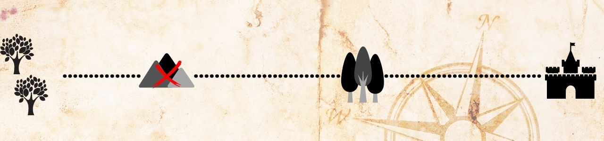

Ele reúne o grupo e juntos precisam elaborar o melhor caminho para o Oeste. O que eles devem fazer:
1 – Ir pela Montanha Sombria e tentar recuperar o Grande Mapa.
2 – Contornar a Montanha Sombria, mesmo sem saber o que os espera ao redor da Montanha.

2 – Contornar a Montanha Sombria, mesmo sem saber o que os espera ao redor da Montanha.